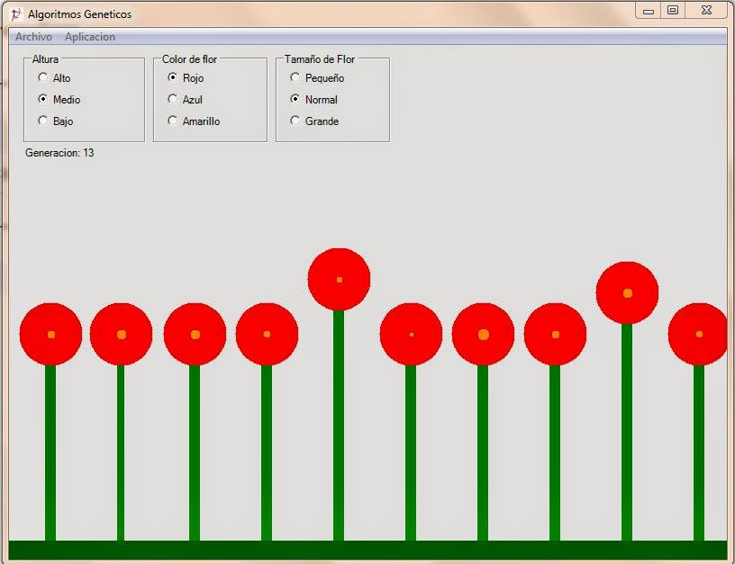

Algoritmo Genetico
Los algoritmos genéticos forman parte de la inteligencia artificial y están inspirados en la forma de trabajar de la evolución y la genética. Creamos un cromosoma digital, en el cual cada gen es una característica que necesitamos para la solución del problema. Las posibles soluciones evolucionan y se seleccionan de forma similar a la selección natural. Existen diversas formas de llevar a cabo la selección. A veces, también suceden mutaciones que pueden ser beneficiosas o perjudiciales. El cruce entre los organismos se usa para crear la generación siguiente.
Partimos de una población de flores en las que el usuario puede seleccionar algunas características, color, tamaño y altura del tallo. Al inicio las flores crecerán al azar. Estas se reproducirán entre sí, e incluso
habrá mutaciones. Poco a poco, conforme avancen las generaciones y si todo sale bien, tendremos una población de flores similares a las que solicitó el usuario.
Tenemos tres Group Boxes y dentro de cada unos de ellos tres Radio Buttons y debajo un Label.
El grupo de Altura tendrá los Radio Buttons Alto,Medio y Bajo con los names: rbAlto, rbMedio y rbBajo.
El grupo Color de la flor tendrá los Radio Buttons Rojo, Azul y Amarillo con los names: rbRojo, rbAzul y rbAmarillo.
El grupo Tamaño de la flor tendra los Radio Buttons Pequeño, Normal y Grande con los names: rbPequeno, rbNormal y rbGrande, a la etiqueta la llamaremos lblGeneracion.
Crearemos la clase Flores y en ella colocaremos la información del cromosoma, el valor de adaptación y la posición de la flor.
La variable X guarda la posición de la flor, en la variable adaptación se guarda el nivel de adaptación de la flor. El cromosoma va a tener 6 genes: altura, color, color del tallo, ancho del tallo, tamaño de la
flor, tamaño del centro de la flor.
Contamos con un arreglo al que llamamos cromosoma. El cromosoma va a tener seis genes. Cada posición en el arreglo equivale a un cromosoma. El primer gen se encarga de la altura de la flor, y su rango es de 10 a 300. En el segundo codificamos
el color de la flor. El valor de 0 indicará rojo, el valor de 1 es azul, y el valor de 2, amarillo. El color del tallo se asigna en el tercer gen y tiene tres posibles tonos de verde. El ancho del tallo es otra característica que podemos colocar;
para este caso el rango de valores será de 5 a 15. El quinto gen es el tamaño de la flor, va desde 20 hasta 80. El ultimo gen es el centro de la flor y el rango es de 5 a 15.
Una vez definidos los datos creamos dos propiedades CoorX para el dato X y Adaptación para nuestra variable adaptación.
El primer dato del arreglo flores, lo llamamos población. En este arreglo colocaremos los objetos que representan a la flores.
Nuestra población de flores es de 10. La variable generación lleva la cuenta del número de generaciones transcurridas de la aplicación. Ademas, hay dos enteros, los cuales serán usados para guardar los
índices del arreglo donde se encuentran las flores que se han seleccionado como padres para la siguiente generación.


using System;
namespace AlgoritmosGeneticos
{
/// <summary>
/// Descripción breve de Flores.
/// </summary>
public class Flores
{
// Variables necesarias para la clase
private int x; // Posici'on en la ventana
private double adaptacion; // Nivel de adaptacion del organismo
// Creamos el cromosoma de la flor
// 0-Altura
// 1-Color de la flor
// 2-Color del tallo
// 3-Ancho del tallo
// 4-Tamaño de la flor
// 5-Tamaño del centro de la flor
public int[] cromosoma=new int[6];
// Creamos las propiedades
public int CoordX
{
set {x=value;}
get {return x;}
}
public double Adaptacion
{
set {adaptacion=value;}
get {return adaptacion;}
}
public Flores()
{
//
// TODO: agregar aquí la lógica del constructor
//
}
}
}
Creamos un objeto de tipo Random, Luego tenemos un ciclo, donde recorreremos todas las flores de nuestra población. Creamos el objeto flor y asignamos la posición donde le corresponde. Procedemos a rellenar el cromosoma. A cada gen del cromosoma, le colocamos un valor aleatorio de acuerdo con el rango que puede tener. Así iniciamos una población creada al azar, que deberá evolucionar hacia el tipo de características seleccionadas por el usuario. Cuando se ejecute la aplicación, aparecerán diez flores diferentes en la ventana.
// Inicializamos los valores de los cromosomas.
// Arreglo de flores
public Flores[] poblacion=new Flores[10];
private System.Windows.Forms.Label lblGeneracion;
private int generacion=0;
private int iPadreA,iPadreB;
public Form1()
{
//
// Necesario para admitir el Diseñador de Windows Forms
//
InitializeComponent();
//
// TODO: agregar código de constructor después de llamar a InitializeComponent
//
Random random=new Random(unchecked((int)DateTime.Now.Ticks));
for(int n=0;n<10;n++)
{
Flores temp=new Flores();
poblacion[n]=temp;
poblacion[n].CoordX=n*80+40;
// Inicializamos el cromosoma con valores al azar
// La altura va de 10 a 300
poblacion[n].cromosoma[0]=random.Next(10,300);
// El color de la flor. 0-rojo, 1-azul, 2-amarillo
poblacion[n].cromosoma[1]=random.Next(0,3);
// El color del tallo. Diferentes tonos de verde
poblacion[n].cromosoma[2]=random.Next(0,3);
// El ancho del tallo. De 5 a 15
poblacion[n].cromosoma[3]=random.Next(5,15);
// El tamano de la flor. De 20 a 80
poblacion[n].cromosoma[4]=random.Next(20,80);
// El tamano del centro de la flor. De 5 a 15
poblacion[n].cromosoma[5]=random.Next(5,15);
}
}
Primero pintamos el suelo. Luego con un ciclo recorremos todas la flores, pintando una por una según sus características. Se `pinta el tallo, dependiendo de su color. El color se guarda en el tercer gen, es decir el que se encuentra en el índice 2. Al usar el gen en el índice 0, vemos su altura, y el valor del gen con índice 3 nos sirve para colocar el ancho del tallo.
Para pintar la flor, utilizamos el circulo. Llevamos a cabo la selección del color usando el el valor contenido en el gen 1. Con el valor del gen con índice 4, colocamos el tamaño., Todos los centros de las flores se pintan del mismo color, en esta caso, un tono naranja oscuro. El tamaño del centro lo obtenemos en el gen con índice 5. Después de pintar todas las flores, actualizamos la etiqueta colocando el valor actual de la generación.
private void Form1_Paint(object sender, System.Windows.Forms.PaintEventArgs e)
{
// Pintamos un suelo
e.Graphics.FillRectangle(Brushes.DarkGreen,0,550,800,50);
// Pintamos las flores
for(int n=0;n<10;n++)
{
// 0-Altura
// 1-Color de la flor
// 2-Color del tallo
// 3-Ancho del tallo
// 4-Tamaño de la flor
// 5-Tamaño del centro de la flor
// pintamos el tallo
// vemos el color del tallo
if(poblacion[n].cromosoma[2]==0)
e.Graphics.FillRectangle(Brushes.DarkGreen,
poblacion[n].CoordX,550-poblacion[n].cromosoma[0],
poblacion[n].cromosoma[3],poblacion[n].cromosoma[0]);
else if(poblacion[n].cromosoma[2]==1)
e.Graphics.FillRectangle(Brushes.Green,
poblacion[n].CoordX,550-poblacion[n].cromosoma[0],
poblacion[n].cromosoma[3],poblacion[n].cromosoma[0]);
else if(poblacion[n].cromosoma[2]==2)
e.Graphics.FillRectangle(Brushes.LightGreen,
poblacion[n].CoordX,550-poblacion[n].cromosoma[0],
poblacion[n].cromosoma[3],poblacion[n].cromosoma[0]);
// Pintamos la flor
//Color cflor=new Color();
Color cflor=new Color();
if(poblacion[n].cromosoma[1]==0)
cflor=Color.Red;
else if(poblacion[n].cromosoma[1]==1)
cflor=Color.Blue;
else if(poblacion[n].cromosoma[1]==2)
cflor=Color.Yellow;
e.Graphics.FillEllipse(new SolidBrush(cflor),
poblacion[n].CoordX+poblacion[n].cromosoma[3]/2-poblacion[n].cromosoma[4]/2,
550-poblacion[n].cromosoma[0]-poblacion[n].cromosoma[4]/2,
poblacion[n].cromosoma[4],poblacion[n].cromosoma[4]);
//Pintamos el centro de la flor
e.Graphics.FillEllipse(Brushes.DarkOrange,
poblacion[n].CoordX+poblacion[n].cromosoma[3]/2-poblacion[n].cromosoma[5]/2,
550-poblacion[n].cromosoma[0]-poblacion[n].cromosoma[5]/2,
poblacion[n].cromosoma[5],poblacion[n].cromosoma[5]);
}
lblGeneracion.Text="Generacion: "+generacion.ToString();
}
El ciclo en donde se lleva a cabo el proceso de la evolución se incorpora por medio del Timer. Cada vez que el Timer genere el evento, se realizará todo el proceso necesario para crear una nueva generación. El evento del Timer se llama Tick, y, en su handler, colocamos el siguiente código:
private void timer1_Tick(object sender, System.EventArgs e)
{
// Calculamos la adaptacion
CalculaAdaptacion();
// Seleccionamos a los padres
SeleccionaPadres();
// Hacemos el crossover y la mutacion
Crossover();
// Acutalizamos la generacion
generacion++;
// Redibujamos la ventana
this.Invalidate();
}
En esa función se invocarán a varias funciones especializadas que nos ayudan con el proceso. La primera función CalculaAdaptacion() sirve para que se calcule el nivel de adaptación de cada flor. Luego SeleccionaPadres() obtiene los dos padres que se utilizarán para crear la siguiente generación. La función de CrossOver() hace el intercambio genético y se encarga de la mutación. Después, se incrementa la variable de generación y se manda a redibujar la ventana.
No existe una fórmula para el cálculo de la adaptación,; cada aplicación tendrá su propia forma de llevar a cabo ese cálculo. A veces, puede ser tan sencillo como una resta; otras, se necesitarán mecanismos más complicados. Nuestra función CalculaAdaptacion() queda de la siguiente manera:
private void CalculaAdaptacion()
{
// Variables para las opciones del usuario
int altura,color,tamano;
altura=color=tamano=0;
// Variables necesarias para el calculo
double Aaltura,Acolor,Atamano;
Aaltura=Acolor=Atamano=0.0;
// Obtnemos la altura deseada por el usuario
if(rbBajo.Checked==true)
altura=0;
else if(rbMedio.Checked==true)
altura=1;
else if(rbAlto.Checked==true)
altura=2;
// Obtenemos el color deseado por el usuario
if(rbRojo.Checked==true)
color=0;
else if(rbAzul.Checked==true)
color=1;
else if(rbAmarillo.Checked==true)
color=2;
// Obtenemos el tamaño de la flor deseado por el usuario
if(rbPequeno.Checked==true)
tamano=0;
else if(rbNormal.Checked==true)
tamano=1;
else if(rbGrande.Checked==true)
tamano=2;
// Recorremos toda la población para encontrar su adaptación
for(int n=0;n<10;n++)
{
// Checamos el nivel de adaptación para la altura
if(altura==0) // rango 10 a 100
Aaltura=poblacion[n].cromosoma[0]/100;
else if(altura==1) // rango 100 a 200
Aaltura=poblacion[n].cromosoma[0]/200;
else if(altura==2) // rango 200 a 300
Aaltura=poblacion[n].cromosoma[0]/300;
if(Aaltura>1.0)
Aaltura=1/Aaltura;
// Checamos el nivel de adaptación del color
if(color==poblacion[n].cromosoma[1])
Acolor=1.0;
else
Acolor=0.0;
// Checamos el nivel de adaptación del tamaño de la flor
if(tamano==0) // rango 20 a 40
Atamano=poblacion[n].cromosoma[4]/40;
else if(tamano==1) // rango 40 a 60
Atamano=poblacion[n].cromosoma[4]/60;
else if(tamano==2) // rango 60 a 80
Atamano=poblacion[n].cromosoma[4]/80;
if(Atamano>1.0)
Atamano=1/Atamano;
// Calculamos el valor final de adaptación
poblacion[n].Adaptacion=(Aaltura+Acolor+Atamano)/3.0;
}
}
Para calcular la adaptación,se calculan tres valores, uno para cada característica que queremos comparar y, luego, se saca el promedio entre ellos, Dentro de la función, en primer lugar, reconocemos cuáles son las características que ha solicitado el usuario, mediante la lectura de los Radio Buttons. Luego recorreremos toda la población y calculamos el valor de adaptación para cada flor. Como podemos ver, cada característica tiene su propia forma de calcular su nivel de adaptación; luego, sacamos el promedio entre ellos
La función para la selección de los padres es SeleccionaPadres(). Esta función resulta muy sencilla, simplemente, selecciona las dos flores con valor valor de adaptación. Los índices donse se encuentran son guardados en las variables iPadreA e iPadreB.
private void SeleccionaPadres()
{
// Seleccionamos los dos mejores
// Modelo elitista
iPadreA=iPadreB=0;
// Encontramos el padre A
for(int n=0;n<10;n++)
{
if(poblacion[n].Adaptacion>poblacion[iPadreA].Adaptacion)
iPadreA=n;
}
// Encontramos el padre B
for(int n=0;n<10;n++)
{
if(poblacion[n].Adaptacion>poblacion[iPadreB].Adaptacion && iPadreA!=n)
iPadreB=n;
}
}
La función para el cruce de los cromosomas. En la función CrossOver(), tomamos los padres seleccionados y creamos una nueva generación con sus genes
private void Crossover()
{
// Llevamos a cabo el cross over
// Copiamos los padres, ya que todo el arreglo sera
// llenado nuevamente con hijos
Flores PadreA=new Flores();
Flores PadreB=new Flores();
// Copiamos los padres
for(int n=0;n<6;n++)
{
PadreA.cromosoma[n]=poblacion[iPadreA].cromosoma[n];
PadreB.cromosoma[n]=poblacion[iPadreB].cromosoma[n];
}
// Creamos la siguiente generacion
Random random=new Random(unchecked((int)DateTime.Now.Ticks));
for(int n=0;n<10;n++)
{
int desde=random.Next(0,5);
int hasta=random.Next(desde,6);
for(int c=desde;c<hasta;c++)
{
// Si el random es 0, se copia el gen de PadreA
// si el random es 1, se copia el gen de PadreB
if(random.Next(0,2)==0)
poblacion[n].cromosoma[c]=PadreA.cromosoma[c];
else
poblacion[n].cromosoma[c]=PadreB.cromosoma[c];
// incluimos la mutacion
if(random.Next(0,100)<=5)
{
if(c==0)
poblacion[n].cromosoma[0]=random.Next(10,300);
if(c==1)
poblacion[n].cromosoma[1]=random.Next(0,3);
if(c==2)
poblacion[n].cromosoma[2]=random.Next(0,3);
if(c==3)
poblacion[n].cromosoma[3]=random.Next(5,15);
if(c==4)
poblacion[n].cromosoma[4]=random.Next(20,80);
if(c==5)
poblacion[n].cromosoma[5]=random.Next(5,15);
}
}
}
}
using System; namespace AlgoritmosGeneticos { /// <summary> /// Descripción breve de Flores. /// </summary> public class Flores { // Variables necesarias para la clase private int x; // Posici'on en la ventana private double adaptacion; // Nivel de adaptacion del organismo // Creamos el cromosoma de la flor // 0-Altura // 1-Color de la flor // 2-Color del tallo // 3-Ancho del tallo // 4-Tamaño de la flor // 5-Tamaño del centro de la flor public int[] cromosoma=new int[6]; // Creamos las propiedades public int CoordX { set {x=value;} get {return x;} } public double Adaptacion { set {adaptacion=value;} get {return adaptacion;} } public Flores() { // // TODO: agregar aquí la lógica del constructor // } } } Creamos un objeto de tipo Random, Luego tenemos un ciclo, donde recorreremos todas las flores de nuestra población. Creamos el objeto flor y asignamos la posición donde le corresponde. Procedemos a rellenar el cromosoma. A cada gen del cromosoma, le colocamos un valor aleatorio de acuerdo con el rango que puede tener. Así iniciamos una población creada al azar, que deberá evolucionar hacia el tipo de características seleccionadas por el usuario. Cuando se ejecute la aplicación, aparecerán diez flores diferentes en la ventana. // Inicializamos los valores de los cromosomas. // Arreglo de flores public Flores[] poblacion=new Flores[10]; private System.Windows.Forms.Label lblGeneracion; private int generacion=0; private int iPadreA,iPadreB; public Form1() { // // Necesario para admitir el Diseñador de Windows Forms // InitializeComponent(); // // TODO: agregar código de constructor después de llamar a InitializeComponent // Random random=new Random(unchecked((int)DateTime.Now.Ticks)); for(int n=0;n<10;n++) { Flores temp=new Flores(); poblacion[n]=temp; poblacion[n].CoordX=n*80+40; // Inicializamos el cromosoma con valores al azar // La altura va de 10 a 300 poblacion[n].cromosoma[0]=random.Next(10,300); // El color de la flor. 0-rojo, 1-azul, 2-amarillo poblacion[n].cromosoma[1]=random.Next(0,3); // El color del tallo. Diferentes tonos de verde poblacion[n].cromosoma[2]=random.Next(0,3); // El ancho del tallo. De 5 a 15 poblacion[n].cromosoma[3]=random.Next(5,15); // El tamano de la flor. De 20 a 80 poblacion[n].cromosoma[4]=random.Next(20,80); // El tamano del centro de la flor. De 5 a 15 poblacion[n].cromosoma[5]=random.Next(5,15); } } Primero pintamos el suelo. Luego con un ciclo recorremos todas la flores, pintando una por una según sus características. Se `pinta el tallo, dependiendo de su color. El color se guarda en el tercer gen, es decir el que se encuentra en el índice 2. Al usar el gen en el índice 0, vemos su altura, y el valor del gen con índice 3 nos sirve para colocar el ancho del tallo. Para pintar la flor, utilizamos el circulo. Llevamos a cabo la selección del color usando el el valor contenido en el gen 1. Con el valor del gen con índice 4, colocamos el tamaño., Todos los centros de las flores se pintan del mismo color, en esta caso, un tono naranja oscuro. El tamaño del centro lo obtenemos en el gen con índice 5. Después de pintar todas las flores, actualizamos la etiqueta colocando el valor actual de la generación. private void Form1_Paint(object sender, System.Windows.Forms.PaintEventArgs e) { // Pintamos un suelo e.Graphics.FillRectangle(Brushes.DarkGreen,0,550,800,50); // Pintamos las flores for(int n=0;n<10;n++) { // 0-Altura // 1-Color de la flor // 2-Color del tallo // 3-Ancho del tallo // 4-Tamaño de la flor // 5-Tamaño del centro de la flor // pintamos el tallo // vemos el color del tallo if(poblacion[n].cromosoma[2]==0) e.Graphics.FillRectangle(Brushes.DarkGreen, poblacion[n].CoordX,550-poblacion[n].cromosoma[0], poblacion[n].cromosoma[3],poblacion[n].cromosoma[0]); else if(poblacion[n].cromosoma[2]==1) e.Graphics.FillRectangle(Brushes.Green, poblacion[n].CoordX,550-poblacion[n].cromosoma[0], poblacion[n].cromosoma[3],poblacion[n].cromosoma[0]); else if(poblacion[n].cromosoma[2]==2) e.Graphics.FillRectangle(Brushes.LightGreen, poblacion[n].CoordX,550-poblacion[n].cromosoma[0], poblacion[n].cromosoma[3],poblacion[n].cromosoma[0]); // Pintamos la flor //Color cflor=new Color(); Color cflor=new Color(); if(poblacion[n].cromosoma[1]==0) cflor=Color.Red; else if(poblacion[n].cromosoma[1]==1) cflor=Color.Blue; else if(poblacion[n].cromosoma[1]==2) cflor=Color.Yellow; e.Graphics.FillEllipse(new SolidBrush(cflor), poblacion[n].CoordX+poblacion[n].cromosoma[3]/2-poblacion[n].cromosoma[4]/2, 550-poblacion[n].cromosoma[0]-poblacion[n].cromosoma[4]/2, poblacion[n].cromosoma[4],poblacion[n].cromosoma[4]); //Pintamos el centro de la flor e.Graphics.FillEllipse(Brushes.DarkOrange, poblacion[n].CoordX+poblacion[n].cromosoma[3]/2-poblacion[n].cromosoma[5]/2, 550-poblacion[n].cromosoma[0]-poblacion[n].cromosoma[5]/2, poblacion[n].cromosoma[5],poblacion[n].cromosoma[5]); } lblGeneracion.Text="Generacion: "+generacion.ToString(); } El ciclo en donde se lleva a cabo el proceso de la evolución se incorpora por medio del Timer. Cada vez que el Timer genere el evento, se realizará todo el proceso necesario para crear una nueva generación. El evento del Timer se llama Tick, y, en su handler, colocamos el siguiente código: private void timer1_Tick(object sender, System.EventArgs e) { // Calculamos la adaptacion CalculaAdaptacion(); // Seleccionamos a los padres SeleccionaPadres(); // Hacemos el crossover y la mutacion Crossover(); // Acutalizamos la generacion generacion++; // Redibujamos la ventana this.Invalidate(); } En esa función se invocarán a varias funciones especializadas que nos ayudan con el proceso. La primera función CalculaAdaptacion() sirve para que se calcule el nivel de adaptación de cada flor. Luego SeleccionaPadres() obtiene los dos padres que se utilizarán para crear la siguiente generación. La función de CrossOver() hace el intercambio genético y se encarga de la mutación. Después, se incrementa la variable de generación y se manda a redibujar la ventana. No existe una fórmula para el cálculo de la adaptación,; cada aplicación tendrá su propia forma de llevar a cabo ese cálculo. A veces, puede ser tan sencillo como una resta; otras, se necesitarán mecanismos más complicados. Nuestra función CalculaAdaptacion() queda de la siguiente manera: private void CalculaAdaptacion() { // Variables para las opciones del usuario int altura,color,tamano; altura=color=tamano=0; // Variables necesarias para el calculo double Aaltura,Acolor,Atamano; Aaltura=Acolor=Atamano=0.0; // Obtnemos la altura deseada por el usuario if(rbBajo.Checked==true) altura=0; else if(rbMedio.Checked==true) altura=1; else if(rbAlto.Checked==true) altura=2; // Obtenemos el color deseado por el usuario if(rbRojo.Checked==true) color=0; else if(rbAzul.Checked==true) color=1; else if(rbAmarillo.Checked==true) color=2; // Obtenemos el tamaño de la flor deseado por el usuario if(rbPequeno.Checked==true) tamano=0; else if(rbNormal.Checked==true) tamano=1; else if(rbGrande.Checked==true) tamano=2; // Recorremos toda la población para encontrar su adaptación for(int n=0;n<10;n++) { // Checamos el nivel de adaptación para la altura if(altura==0) // rango 10 a 100 Aaltura=poblacion[n].cromosoma[0]/100; else if(altura==1) // rango 100 a 200 Aaltura=poblacion[n].cromosoma[0]/200; else if(altura==2) // rango 200 a 300 Aaltura=poblacion[n].cromosoma[0]/300; if(Aaltura>1.0) Aaltura=1/Aaltura; // Checamos el nivel de adaptación del color if(color==poblacion[n].cromosoma[1]) Acolor=1.0; else Acolor=0.0; // Checamos el nivel de adaptación del tamaño de la flor if(tamano==0) // rango 20 a 40 Atamano=poblacion[n].cromosoma[4]/40; else if(tamano==1) // rango 40 a 60 Atamano=poblacion[n].cromosoma[4]/60; else if(tamano==2) // rango 60 a 80 Atamano=poblacion[n].cromosoma[4]/80; if(Atamano>1.0) Atamano=1/Atamano; // Calculamos el valor final de adaptación poblacion[n].Adaptacion=(Aaltura+Acolor+Atamano)/3.0; } } Para calcular la adaptación,se calculan tres valores, uno para cada característica que queremos comparar y, luego, se saca el promedio entre ellos, Dentro de la función, en primer lugar, reconocemos cuáles son las características que ha solicitado el usuario, mediante la lectura de los Radio Buttons. Luego recorreremos toda la población y calculamos el valor de adaptación para cada flor. Como podemos ver, cada característica tiene su propia forma de calcular su nivel de adaptación; luego, sacamos el promedio entre ellos La función para la selección de los padres es SeleccionaPadres(). Esta función resulta muy sencilla, simplemente, selecciona las dos flores con valor valor de adaptación. Los índices donse se encuentran son guardados en las variables iPadreA e iPadreB. private void SeleccionaPadres() { // Seleccionamos los dos mejores // Modelo elitista iPadreA=iPadreB=0; // Encontramos el padre A for(int n=0;n<10;n++) { if(poblacion[n].Adaptacion>poblacion[iPadreA].Adaptacion) iPadreA=n; } // Encontramos el padre B for(int n=0;n<10;n++) { if(poblacion[n].Adaptacion>poblacion[iPadreB].Adaptacion && iPadreA!=n) iPadreB=n; } } La función para el cruce de los cromosomas. En la función CrossOver(), tomamos los padres seleccionados y creamos una nueva generación con sus genes private void Crossover() { // Llevamos a cabo el cross over // Copiamos los padres, ya que todo el arreglo sera // llenado nuevamente con hijos Flores PadreA=new Flores(); Flores PadreB=new Flores(); // Copiamos los padres for(int n=0;n<6;n++) { PadreA.cromosoma[n]=poblacion[iPadreA].cromosoma[n]; PadreB.cromosoma[n]=poblacion[iPadreB].cromosoma[n]; } // Creamos la siguiente generacion Random random=new Random(unchecked((int)DateTime.Now.Ticks)); for(int n=0;n<10;n++) { int desde=random.Next(0,5); int hasta=random.Next(desde,6); for(int c=desde;c<hasta;c++) { // Si el random es 0, se copia el gen de PadreA // si el random es 1, se copia el gen de PadreB if(random.Next(0,2)==0) poblacion[n].cromosoma[c]=PadreA.cromosoma[c]; else poblacion[n].cromosoma[c]=PadreB.cromosoma[c]; // incluimos la mutacion if(random.Next(0,100)<=5) { if(c==0) poblacion[n].cromosoma[0]=random.Next(10,300); if(c==1) poblacion[n].cromosoma[1]=random.Next(0,3); if(c==2) poblacion[n].cromosoma[2]=random.Next(0,3); if(c==3) poblacion[n].cromosoma[3]=random.Next(5,15); if(c==4) poblacion[n].cromosoma[4]=random.Next(20,80); if(c==5) poblacion[n].cromosoma[5]=random.Next(5,15); } } } }
Source Code Files
More Information
For more information on X, see ...?